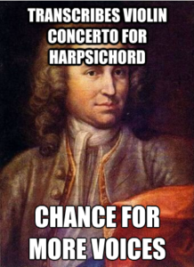

Bermain Internet Meme Sambil Menghindari Pelanggaran Hak Cipta
Meme dapat diartikan sebagai ide, kebiasaan, atau gaya penggunaan, yang tersebar dan digunakan satu pihak ke pihak lainnya.
Internet Meme merupakan rangkaian aktivitas seperti yang telah disebutkan sebelumnya, tetapi hanya terjadi di dalam jaringan. Berkembangnya Internet Meme banyak menghasilkan produk-produk hasil dari serangkaian perbuatan (penggandaan, pengubahan, penggubahan, pengkombinasian dan penyebarluasan) terhadap ciptaan-ciptaan (lukisan, foto, video, teks, dan lain-lain) yang dianggap memiliki nilai humor. Tidak sedikit dari ciptaan-ciptaan yang menjadi obyek perbuatan tersebut merupakan obyek yang dilindungi oleh Hak Cipta.
Serangkaian perbuatan ini otomatis mengemban risiko pelanggaran hak cipta. Beberapa ciptaan yang umumnya dibagikan dan dimodifikasi di situs-situs seperti 9Gag, Memegenerator, 1Cak, atau KnowYourMeme merupakan bagian dari produk budaya massa dengan nilai komersial yang tinggi. Sebagai contoh, Anda dapat melihat kumpulan modifikasi foto Boromir (salah satu tokoh di dalam film Lord Of The Rings yang meraup keuntungan 2.917 Miliar Dollar Amerika Serikat) di tautan berikut ini.

Namun, sejauh ini pihak New Line Cinema atau JRR Tolkien sekalipun belum pernah mengajukan permintaan untuk menurunkan hasil modifikasi gambar Boromir, bahkan mereka tidak membawanya ke ranah pengadilan. Ciptaan dengan ‘nilai jual’ tinggi tersebut, proses penciptaannya tentu saja tidak mudah, tidak murah, dan memakan banyak waktu. Dalam kasus Boromir memang tidak ada akibat hukum bagi pihak pengguna, namun hal tersebut tidak dapat menjamin adanya tuntutan-tuntuan yang diajukan oleh pihak pencipta ciptaan yang lain.
Untuk itu artikel ini akan menyediakan beberapa tips bagi pihak pengguna ciptaan yang aktif di ranah Internet Meme.
1) Menggunakan Sesuai Dengan Ketentuan “Penggunaan Wajar” (Fair Use)
Penggunaan wajar merupakan suatu doktrin yang diterapkan untuk menghidupkan fungsi sosial dari peraturan terkait Hak Cipta. Doktrin ini menetapkan beberapa kriteria penggunaan yang dikecualikan dari apa yang dimaksud dengan pelanggaran hak cipta. Di Indonesia, Penggunaan wajar diatur di Pasal 26 dan Pasal 43-51 Undang-Undang No. 28 Tahun 2014 Tentang Hak Cipta (UUHC 2014). Dalam konteks berbagi dan modifikasi ciptaan di ranah Internet Meme, perbuatan Anda akan dianggap sebagai penggunaan wajar jika:
- Ciptaan tersebut tidak digunakan untuk kepentingan komersial.
- Anda harus menerapkan atribusi yang sesuai (menyebutkan nama, dan sumber) ketika Anda menggunakan suatu ciptaan.
Kita dapat memuat suatu pernyataan penggunaan wajar untuk menginformasikan kepada publik (khususnya pencipta) bahwa tidak ada pelanggaran hak cipta dalam aktivitas penggunaan ciptaan tersebut. Selain itu, Anda juga bisa menyertakan pernyataan bahwa Anda menggunakan karya ini untuk menyatakan suatu kritik atau membuat suatu parodi. Penggunaan untuk tujuan pembuatan parodi telah ditetapkan sebagai salah satu kriteria dalam doktrin penggunaan wajar oleh Mahkamah Agung Amerika Serikat. Pembuatan parodi dianggap sebagai “salah satu bentuk penulisan komentar pada suatu ciptaan”. UUHC 2014 juga menyebutkan bahwa penulisan komentar pada ciptaan merupakan penggunaan wajar. Sehingga, Anda bisa saja menyertakan hal tersebut di dalam pernyataan penggunaan wajar yang Anda buat.

{kind=link}
2) Menggunakan gambar yang telah habis masa berlaku hak ciptanya
Peraturan terkait Hak Cipta juga mengatur tentang masa berlaku hak cipta. Indonesia mengatur hal ini sejak mellaui UUHC 2014. Masa berlaku hak cipta berlangsung seumur hidup Pencipta, ditambah 70 tahun setelah Pencipta meninggal dunia, terhitung sejak tanggal 1 Januari setahun setelah tahun meninggal Pencipta. Dalam konteks ciptaan-ciptaan yang kerap muncul dalam ranah Internet Meme seperti karya seni rupa, fotografi, teks, dan video terdapat perbedaan jangka waktu perlindungan hak cipta.
Untuk karya seni rupa, dan teks masa berlaku hak ciptanya adalah seumur hidup Pencipta ditambah 70 tahun setelah Pencipta meninggal dunia.
Sedangkan untuk karya fotografi, dan video (sinematografi) masa berlaku hak ciptanya adalah 50 tahun sejak ciptaan tersebut pertama kali dipublikasikan.
Anda dapat menemukan ciptaan-ciptaan yang telah habis masa berlaku hak ciptanya di situs-situs seperti Wikimedia Commons atau Internet Archive.
3) Menggunakan gambar atau foto dengan lisensi terbuka
Salah satu penyebab penggunaan ciptaan dapat dianggap sebagai pelanggaran hak cipta adalah karena penggunaan tersebut dilakukan tanpa izin dari Pencipta atau Pemegang Hak Cipta. Dalam sistem hak cipta tradisional, banyak ciptaan dilisensikan dengan ketentuan “All Rights Reserved” (Seluruh Hak Dipertahankan). Model lisensi ini mengharuskan Pencipta untuk mendapatkan izin langsung dari Pencipta atau Pemegang Hak Cipta ketika hendak menggunakan ciptaan buatan Pencipta yang bersangkutan. Tidak jarang praktik lisensi ini mengharuskan pengguna untuk membayar biaya lisensi (izin) atau royalti kepada Pencipta atau Pemegang Hak Cipta dalam aktivitas penggunaan ciptaan tersebut. Biaya lisensi atau royalti yang tidak terjangkau, kadang dirasa tidak sebanding dengan penggunaan ciptaan yang begitu sederhana di ranah Internet Meme.
Bisa dibilang hal ini lah yang menyebabkan beberapa pengguna menolak untuk membayar biaya lisensi tersebut mengurungkan niat untuk menggunakan ciptaan, atau malah melanggar lisensi yang diterapkan oleh pencipta dengan menggunakan tanpa izin dan tanpa membayar lisensi.
Keberadaan lisensi terbuka sebenarnya dapat menjadi solusi untuk permasalahan ini. Lisensi terbuka memungkinkan penggunaan ciptaan tanpa harus meminta izin dari pencipta atau pemegang hak cipta. Ketentuan yang diterapkan oleh lisensi terbuka adalah “Some Rights Reserved” (Beberapa Hak Dipertahankan). Lisensi ini dapat dianggap sebagai perwujudan ketentuan penggunaan wajar. Karena selain secara langsung memberikan izin penggunaan kepada pengguna, lisensi ini juga dilengkapi dengan ketentuan-ketentuan yang mewajibkan pengguna untuk menerapkan atribusi yang sesuai, dan ketentuan seperti pelarangan penggunaan untuk kepentingan komersial. Lisensi terbuka yang kerap diterapkan pada ciptaan seperti karya seni rupa maupun fotografi, dan sesuai dengan konteks Internet Meme adalah lisensi Creative Commons (CC).
Lisensi CC menyediakan 6 lisensi utama yang biasa digunakan pada ciptaan. Namun, 2 dari 6 lisensi tersebut tidak layak untuk diterapkan dalam ranah Internet Meme. Kedua lisensi tersebut adalah:

CC BY-ND (Atribusi-TanpaTurunan)
Anda diizinkan:
- Berbagi: Menyalin dan menyebarluaskan ciptaan.
- Adaptasi: Mengubah, menggubah, dan membuat ciptaan turunan dari suatu ciptaan.
Dengan catatan:
- TanpaTurunan: Ciptaan yang anda modifikasi tidak boleh disebarluaskan.

CC BY-NC-ND (Atribusi-NonKomersial-TanpaTurunan)
Anda diizinkan:
- Berbagi: Menyalin dan menyebarluaskan ciptaan.
- Adaptasi: Mengubah, menggubah, dan membuat ciptaan turunan dari suatu ciptaan.
Dengan catatan:
- NonKomersial: Tidak dapat menggunakan ciptaan untuk kepentingan komersial. TanpaTurunan: Ciptaan yang anda modifikasi tidak boleh disebarluaskan.
Mengapa 2 lisensi ini tidak layak digunakan di ranah internet meme?
Karena 2 lisensi tersebut sama-sama tidak menghendaki adanya modifikasi terhadap suatu ciptaan. Ketentuan “Tanpa Turunan” tidak memperbolehkan adanya penyebarluasan hasil modifikasi ciptaan yang Anda buat.
Artinya jika Anda membuat sebuah karya meme dari suatu ciptaan berlisensi CC yang menerapkan ketentuan “TanpaTurunan”, pada akhirnya Anda tidak bisa membagikan hasil modifikasi tersebut. 4 lisensi lainnya, selain lisensi yang menerapkan ketentuan ND (NonDerrivatives), memungkinkan Anda untuk membagikan hasil modifikasi terhadap ciptaan.

{kind=link}
Untuk menemukan ciptaan dengan lisensi terbuka Anda dapat memanfaatkan mesin pencari ciptaan berlisensi CC yang disediakan oleh Creative Commons. Selain itu Anda juga dapat menemukan ciptaan yang dapat Anda manfaatkan dalam ranah Internet Meme di situs-situs seperti Flickr, dan Wikimedia Commons untuk ciptaan berupa foto atau gambar, dan situs seperti Vimeo untuk ciptaan berupa video (sinematografi). Dengan menggunakan ciptaan yang menerapkan lisensi terbuka, Anda dapat menghindari risiko pelanggaran hak cipta. Selain itu, Anda juga terhindar dari potensi sengketa yang timbul dari pelanggaran hak cipta.
Sumber:
Copyright, Memes and the Perils of Viral Content
Posting an Internet Meme? You May Receive a Getty Letter
How to Create Business Friendly Memes
Tags:
Oleh: Hilman Fathoni
11 Aug 2016Kategori:
Berita Terbaru
- Lokakarya Hak Cipta dan Lisensi Creative Commons di Pekanbaru
- Pengumuman Resmi: Hasil Akhir Training of Trainers Creative Commons Indonesia
- Literatur tentang Model Bisnis Terbuka "Made With CC"
- Data dan Artikel Ilmiah Terbuka dari PLOS!
- Konten Format Model 3 Dimensi Berilsensi CC di Platform Sketchfab